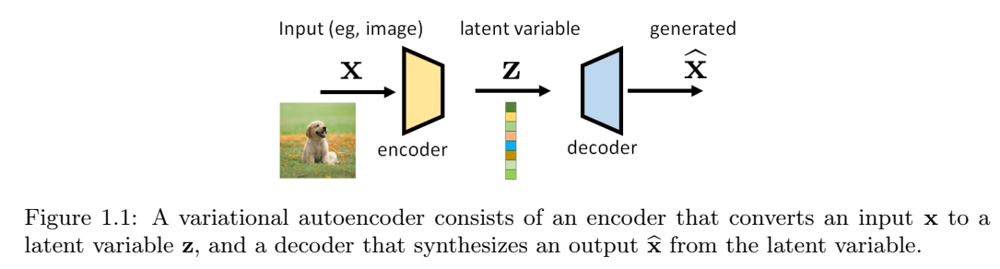
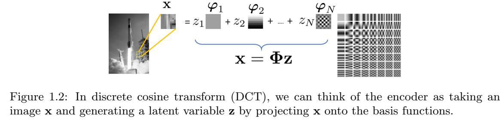
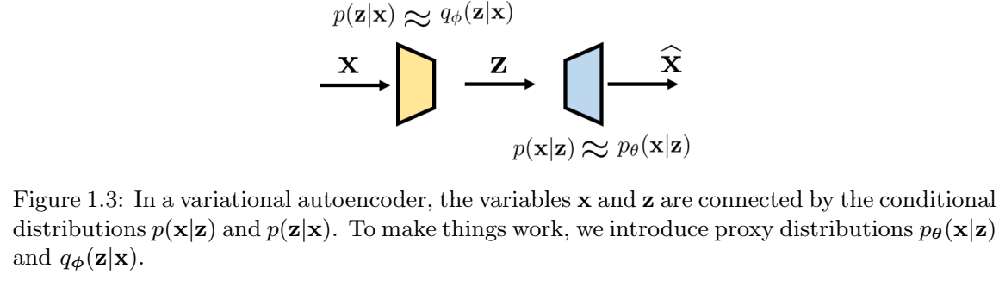
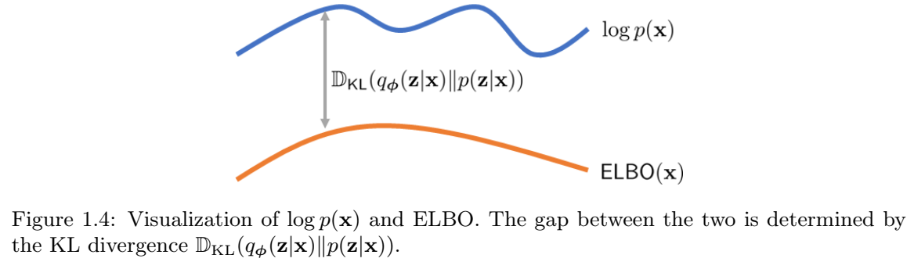
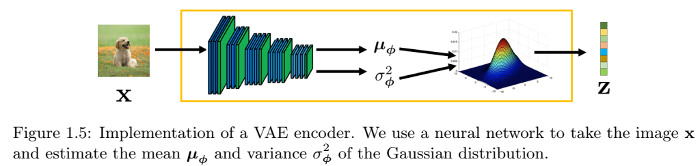
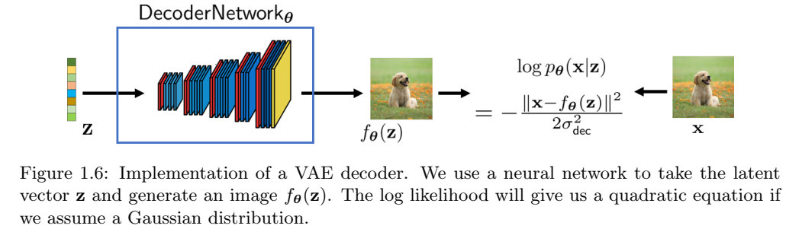
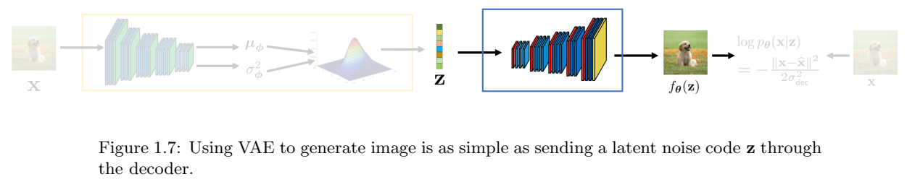
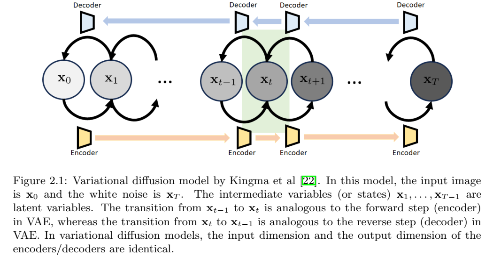
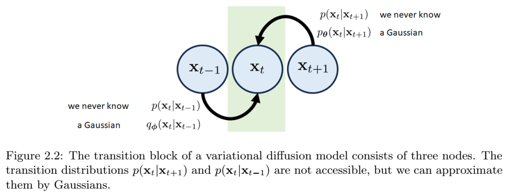

VAE
很久以前，在一个遥远的星系里，我们想建造一个生成器——一个从我们给计算机的一些输入中生成文本、演讲或图像的生成器。虽然这听起来很神奇，但这个问题实际上已经研究了很长时间。为了开始本教程的讨论，我们将首先考虑变分自动编码器（VAE）。VAE是由金玛和韦林于2014年提出的。根据他们2019年的教程，VAE的灵感来自亥姆霍兹机器，是图形模型和深度学习的结合。在接下来的内容中，我们将讨论VAE的问题设置、构建块以及与训练相关的优化工具。
VAE
我们首先讨论VAE的示意图。如下图所示，VAE由一对模型组成（通常由深度神经网络实现）。位于输入端附近的称为编码器，而位于输出端附近的则称为解码器。我们将输入（通常是图像）表示为向量x，将输出（通常是另一个图像）表示为由向量\(\hat{x}\)。位于编码器和解码器之间中间的向量被称为潜在变量，表示为z。编码器的工作是提取x的有意义的表示，而解码器的工作是从潜在变量z生成新的图像。

潜在变量z在此设置中有两个特殊作用。对于输入，潜在变量封装了可用于描述x的信息。编码过程可能是一个有损的过程，但我们的目标是尽可能多地保留x的重要内容。关于输出，潜在变量充当可以生成图像\(\hat{x}\)的“种子”。理论上，两个不同的z应该给我们两个不同生成的图像。
下面给出了潜在变量的更正式的定义。
定义 1.1 潜变量。概率模型中，潜变量z是我们没有观测到的变量，且因此不是训练集的一部分，尽管它们是模型的一部分。
示例 1.1 获得图像的潜在表示并不是一件陌生的事情。回到JPEG压缩（它可以说是恐龙）时代，我们使用离散余弦变换（DCT）基函数\(\phi_n\)来编码图像的底层图像/补丁。系数向量\(z=[z_1,\dots,z_N]^T\)是通过将图像x投影到由基函数跨越的空间上，通过\(z_n=\langle\phi_n,x\rangle\)得到的。因此，给定图像x，我们可以产生系数向量z。从z，我们可以使用逆变换来恢复（即解码）图像。

在这个例子中，系数向量z是潜在变量。编码器是DCT变换，解码器是逆DCT变换。
VAE中的“变分”一词与研究函数优化的变分法有关。在VAE中，我们有兴趣寻找描述x和z的最佳概率分布。有鉴于此，我们需要考虑一些分布：
-
p（x）：x 的真实分布。它永远无法得知。所有扩散模型都试图找到从 p(x) 中抽取样本的方法。如果我们知道 p(x)（比如说，我们有一个描述 p(x) 的公式），我们就可以抽取一个使 log p(x) 最大化的样本 x。
-
p（z）：潜在变量的分布。通常，我们将其设为零均值、单位方差的高斯分布 N(0, I)。原因之一是高斯分布的线性变换仍然是高斯分布，因此这使得数据处理更容易。Doersch也对此进行了很好的解释。文中提到，任何分布都可以通过将高斯分布映射到一个足够复杂的函数来生成。例如，在单变量设置中，逆累积分布函数 (CDF) 技术可用于任何具有可逆 CDF 的连续分布。一般来说，只要我们有一个足够强大的函数（例如神经网络），我们就可以学习它，并将独立同分布的高斯分布映射到我们问题所需的任何潜在变量。
-
p(z|x)：与编码器相关的条件分布，它告诉我们给定 x 时 z 的似然值。我们无法获取它。p(z|x) 本身不是编码器，但编码器必须采取一些措施，使其行为与 p(z|x) 保持一致。
-
p(x|z)：与解码器相关的条件分布，它告诉我们给定 z 得到 x 的后验概率。同样，我们无法访问它。
当我们从经典参数模型切换到深度神经网络时，潜在变量的概念就变成了深度潜在变量。金玛和韦林给出了一个很好的定义。
定义1.2 深层潜在变量。深层潜在变量是分布p（z）、p（x|z）或p（z|x）由神经网络参数化的潜在变量。
深层潜变量的优点是，即使先验分布和条件分布的结构相对简单（例如高斯分布），它们也可以对非常复杂的数据分布p（x）进行建模。一种思考方式是，神经网络可用于估计高斯分布的均值。虽然高斯本身很简单，但平均值是输入数据的函数，输入数据通过神经网络生成数据相关的平均值。因此，高斯函数的表现力得到了显著提高。
让我们回到上面的四个分布。下面是一个有点琐碎但有教育意义的例子，可以说明这个想法：
示例1.2 考虑根据高斯混合模型分布的随机变量X，其中潜在变量\(z\in {1,\dots,K}\)表示簇恒等式，使得\(p_Z(k) = P[z=K]=\pi_k\)，\(k=1,\dots, K\)。我们假设\(\sum_{k=1}^K\pi_k=1\)。然后，如果我们被告知只需要看第k个簇，则给定Z的X的条件分布为 \[p_{X|Z}(x|k) = N(x|\mu_k,\sigma_k^2 I)\]
x的边际分布可以用全概率定律来求，得到 \[p_X(x) = \sum_{k=1}^K p_{X|Z}(x|k)p_Z(k) = \sum_{k=1}^K\pi_k N(x|\mu_k, \sigma_k^2 I).\tag{1.1}\]
因此，如果我们从\(p_X(x)\)开始，编码器的设计问题是构建一个神奇的编码器，使得对于每个样本\(x\sim p_X(x)\)，潜在码将是\(z\in {1,\dots,K}\)，分布为\(z \sim p_Z(k)\)。
为了说明编码器和解码器是如何工作的，让我们假设均值和方差是已知的并且是固定的。否则，我们需要通过期望最大化（EM）算法来估计均值和方差。这是可行的，但繁琐的方程式会破坏这个插图的教育目的。
编码器：我们如何从 x 得到 z？这很容易，因为在编码器中，我们知道 \(p_X(x)\) 和 \(p_Z(k)\)。假设只有两个类 \(z \in {1,2}\)。实际上，你只是在对样本 x 应该属于哪个类别进行二元决策。有很多方法可以进行二元决策。如果你喜欢最大后验概率决策规则，可以检查
\[P_{Z|X}(1|X) \stackrel{\gt \text{calss 1}}{\lt \text{class 2}}p_{Z|X}(2|X), \]
这将返回一个简单的决定：你给我们x，我们告诉你z∈{1,2}。
解码器：在解码器端，如果我们得到一个潜在码\(z\in{1,\dots,K}\)，那么神奇的解码器只需要向我们返回一个样本x，该样本x来自\(P_{X|Z}(x|k) = N(x|\mu_k, \sigma_k^2 I)\)。不同的 z 将返回 K 个混合分量中的一个。如果我们有足够多的样本，整体分布将遵循高斯混合。
这个例子当然过于简单了，因为现实世界的问题可能比具有已知均值和已知方差的高斯混合模型要困难得多。但我们意识到，如果我们想找到神奇的编码器和解码器，我们必须找到两个条件分布\(p(z|x)\)和\(p(x|z)\)。然而，它们都是高维的。
为了表达更有意义的内容，我们需要引入额外的结构，以便将概念推广到更难的问题。为此，我们考虑以下两个代理分布：
- \(q_{\phi}(z|x)\)：p（z|x）的代理，这也是与编码器相关的分布。\(q_{\phi}(z|x)\)可以是任何有向图模型，并且可以使用深度神经网络进行参数化[24，第2.1节]。例如，我们可以定义
\[(\mu, \sigma^2) = \text{EncoderNetwork}_{\phi}(x), \]
\[q_{\phi}(z|x) = N(z|\mu, \text{diag}(\sigma^2)). \tag{1.2}\]
该模型因其可处理性和计算效率而被广泛使用。
- \(p_{\theta}(x|z)\)：p（x|z）的代理，它也是与解码器相关的分布。与编码器一样，解码器也可以通过深度神经网络进行参数化。例如，我们可以定义 \[f_{\theta}(z) = \text{DecoderNetwork}_{\theta}(z), \]
\[p_{\theta}(x|z) = N(x | f_{\theta}(z), \sigma_{dec}^2 I), \tag{1.3} \]
其中，\(\sigma_{dec}\)是一个可以预先确定或可以学习的超参数。
图1.3总结了输入x和潜在z之间的关系以及条件分布。有两个节点x和z。“正向”关系由p（z|x）指定（近似为\(q_{\phi}(z|x)\)），而“反向”关系由p（x|z）指定（并近似为\(p_{\theta}(x|z)\)）。

示例 1.3 假设我们有一个随机变量 \(x \in R^d\) 和一个潜在变量 \(z \in R^d\)，使得
\[x \sim p(x) = N(x|\mu, \sigma^2 I),\]
\[z \sim p(z) = N(z | 0, I).\]
我们希望构建一个VAE。通过这种方式，我们的意思是我们想构建两个映射：\(\text{Encoder}(\cdot)\)和\(\text{Decoder}(\cdot)\)。编码器将获取样本x并将其映射到潜在变量z，而解码器将获取潜在变量z并将其对应到生成的变量\(\hat{x}\)。如果我们知道p（x）是什么，那么存在一个简单的解，其中\(z = (x-\mu)/\sigma\),以及\(\hat{x} = \mu + \sigma z\)。在这种情况下，可以确定真实分布，并用δ函数表示：
\[p(x|z) = \delta(x - (\sigma z + \mu)),\]
\[p(z|x) = \delta(z - (x - \mu)/sigma). \]
假设，现在我们不知道p(x)，所以我们需要构建一个编码器和一个解码器来估计z和\(\hat{x}\)。首先定义编码器。在此示例中，我们的编码器接收输入x，并生成参数对\(\hat{\mu}(x)\)和\(\hat{\sigma}(x)^2\)，代表高斯的参数。然后，我们定义\(q_{\phi}(z|x)\)为高斯：
\[(\hat{\mu}(x), \hat{\sigma}^2) = \text{Encoder}_{\phi}(x), \]
\[q_{\phi}(z|x) = N(z|\hat{\mu}(x), \hat{\sigma}(x)^2 I).\]
出于讨论的目的，我们假设\(\hat{\mu}\)是x的仿射函数，使得对于某些参数a和b，\(\hat{\mu}(x) = ax +b \)。类似的，我们假设，对于某些标量t，\(\hat{\sigma}(x)^2 = t^2\)。得到
\[q_{\phi}(z|x) = N(z| ax + b, t^2 I).\]
对于解码器，我们通过考虑以下因素来部署类似的结构
\[(\tilde{\mu}(z), \tilde{\sigma}(z)^2) = \text{Decoder}_{\theta}(z), \]
\[p_{\theta}(x|z) = N(x| \tilde{\mu}(z), \tilde{\sigma}(z)^2 I).\]
同样，为了讨论的目的，我们假设\(\tilde{\mu}\)是仿射的，因此对于某些参数c和v，\(\tilde{\mu}(z) = cz + v\)，对于某些标量s，\(\tilde{\sigma}(z)^2 = s^2\)。因此，\(p_{\theta}(x|z)\)的形式为： \[p_{\theta}(x|z) = N(z| cx + v, s^2 I).\]
我们稍后将讨论如何确定参数。
置信下限（ELBO）
如何使用上述两个代理分布，来确定编码器和解码器？若将\(\phi\)和\(\theta\)当作优化变量，那么，需要目标函数（或损失函数），从而可以通过训练样本优化\(\phi\)和\(\theta\)。这里，使用的损失函数，称为置信下限(ELBO, Evidence Lower BOund):
定义 1.3 （置信下限） 置信下限定义为
\[ELBO(x) \stackrel{def}{=}E_{q_{\phi}(z|x)}\bigg[log\frac{p(x,z)}{q_{\phi}(z|x)}\bigg]. \tag{1.4}\]
你肯定很困惑，地球上的人怎么能想出这个损失函数！？让我们看看ELBO是什么意思以及它是如何推导出来的。
简而言之，ELBO是先验分布\(log p(x)\)的下限，因为我们可以证明 \begin{align} \text{log}\ p(x) &= \text{some magical steps to be derived}\\ &= E_{q_{\phi}(z|x)}\bigg[\text{log}\frac{p(x,z)}{q_{\phi}(z|x)}\bigg] + D_{KL}(q_{\phi}(z|x)||p(z|x))\\ &\ge E_{q_{\phi}(z|x)}\bigg[\text{log}\frac{p(x,z)}{q_{\phi}(z|x)}\bigg]\\ &\stackrel{def}{=}\text{ELBO}(x), \tag{1.5} \end{align}
其中，不等式是根据KL散度总是非负。因此，ELBO是\(log\ p(x)\)的一个有效下限。由于我们永远无法访问\(\text{log}\ p(x)\)，如果我们能够以某种方式访问ELBO，并且ELBO是一个很好的下限，那么我们可以有效地最大化ELBO，以实现最大化\(\text{log}\ p(x)\)的目标，这是黄金标准。现在，问题是下限有多好。正如你从方程和图1.4中看到的，当我们的代理\(q_{\phi}(z|x)\)能够与真实分布\(p(z|x)\)完全匹配时，不等式将变为等式。因此，游戏的一部分是确保\(q_{\phi}(z|x)\)接近\(p(z|x)\)。

方程（1.5）的推导如下。
定理 1.1 对数似然分解。 \(\text{log}\ p(x)\)的对数似然可以分解为
$$\text{log}\ p(x) = \overbrace{E_{q_{\phi}(z|x)}\bigg[\text{log}\frac{p(x,z)}{q_{\phi}(z|x)}\bigg]}^{\stackrel{def}{=}ELBO(x)} + {D_{KL}(q_{\phi}(z|x)||p(z||x))}. \tag{1.6}$$
证明 诀窍是使用我们的神奇代理\(q_{\phi}(z|x)\)来探究 p(x) 并推导出边界。
\begin{align} log\ p(x) &= log\ p(x) \times \overbrace{\int q_{\phi}(z|x)dz}^{=1} \quad\quad\quad &(\text{乘 1})\\ &=\int \overbrace{lop\ p(x)}^{\text{some constant wrt z}} \times \overbrace{q_{\phi}(z|x)}^{\text{distribution in z}} \ dz \quad\quad\quad&(log\ p(x)移到积分内)\\ &= E_{q_{\phi}(z|x)}[log\ p(x)], \tag{1.7} \end{align}
其中最后一个等式是，对于任何随机变量z和标量a，\(\int a \times p_Z(z)dz = E[a] = a\)。
看，我们已经得到了\(E_{q_{\phi}(z|x)}[\cdot]\)。只需再几步。根据贝叶斯定理， \(p(x,z) = p(z|x)p(x)\):
\begin{align} E_{q_{\phi}(z|x)}[log\ p(x)] &= E_{q_{\phi}(z|x)}\bigg[log\frac{p(x,z)}{p(z|x)}\bigg] \quad\quad\quad &(\text{贝叶斯定理})\\ &= E_{q_{\phi}(z|x)}\bigg[log\frac{p(x,z)}{p(z|x)} \times \color{red}{\frac{q_{\phi}(z|x)}{q_{\phi}(z|x)}} \bigg] &(\text{乘}\ \frac{q_{\phi}(z|x)}{q_{\phi}(z|x)})\\ &= \overbrace{E_{q_{\phi}(z|x)}\bigg[log \frac{p(x,z)}{\color{red}{q_{\phi}(z|x)}}\bigg]}^{ELBO} + \overbrace{E_{q_{\phi}(z|x)}\bigg[log \frac{\color{red}{q_{\phi}(z|x)}}{p(z|x)}\bigg]}^{D_{KL}(q_{\phi}(z|x)||(p(z|x))}, \tag{1.8} \end{align}
其中我们认识到第一项正是ELBO，而第二项正是KL散度。将方程（1.8）与方程（1.5）进行比较，我们完成了证明。
示例 1.4 使用先前示例，果我们知道\(p(z|x)\)，我们可以最小化\(log\ p(x)\)和 ELBO(x)之间的差距。为此，我们注意到 \[log\ p(x) = ELBO(x) + D_{KL}(q_{\phi}(z|x)||p(z|x)) \ge ELBO(x). \]
当且仅当KL散度为0，等号成立。若KL散度为0，则需要\(q_{\phi}(z|x) = p(z|x)\)。然而，由于\(p(z|x)\)是delta函数，唯一的可能是 \begin{align} q_{\phi}(z|x) &= N(z|\frac{x-\mu}{\sigma}, 0)\\ &= \delta(z - \frac{x-\mu}{\sigma}), \tag{1.9} \end{align}
即我们将标准偏差设置为t=0。为了确定\(p_{\theta}(x|z)\)，我们需要一些额外的步骤来简化ELBO。
我们现在有ELBO。但是这个ELBO仍然不太有用，因为它涉及p（x，z），这是我们无法访问的。所以，我们需要做更多的工作。
定理 1.2 ELBO解读。 ELBO可以分解为 \[ELBO(x) = \overbrace{E_{q_{\phi}(z|x)}[log\ \overbrace{p_{\theta}(x|z)}^{\text{a Gaussian}}]}^{\color{red}{\text{how good your decoder is}}} - \overbrace{D_{KL}(\overbrace{q_{\phi}(z|x)}^{\text{a Gaussian}}\ ||\ \overbrace{p(z)}^{\text{a Gaussian}})}^{\text{how good your encoder is}}. \tag{1.10}\]
证明 让我们仔细看看ELBO
\begin{align} ELBO(x) &\stackrel{def}{=}E_{q_{\phi}(z|x)}\bigg[log\frac{p(x,z)}{q_{\phi}(z|x)}\bigg] \quad\quad\quad &(定义) \\ &= E_{q_{\phi}(z|x)}\bigg[log\frac{\color{red}{p(x|z)p(z)}}{q_{\phi}(z|x)}\bigg] &(p(x,z) = p(x|z)p(z))\\ &= E_{q_{\phi}(z|x)}[log\ p(x|z)] + E_{q_{\phi}(z|x)}\bigg[log\frac{p(z)}{q_{\phi}(z|x)}\bigg] &(期望分解)\\ &= E_{q_{\phi}(z|x)}[log\ \color{red}{p_{\theta}(x|z)}] - D_{KL}(q_{\phi}(z|x)||p(z)), &(KL定义) \end{align} 其中，我们替换不可访问的p(x|z)为其代理\(p_{\theta}(x|z)\)。
这是一个美丽的结果。我们只是展示了一些很容易理解的东西。让我们看看方程式（1.10）中的两个项：
- 重构。第一项与解码器有关。我们希望解码器在将潜在向量 z 输入解码器时能够生成良好的图像 x（当然！！）。因此，我们希望最大化\(log\ p_{\theta}(x|z)\)。这类似于最大似然法，我们想要找到一个模型参数来最大化观察到图像的似然值。这里的期望值是针对样本 z（以 x 为条件）取的。这并不奇怪，因为样本 z 是用来评估解码器质量的。它不能是任意的噪声向量，而是一个有意义的潜在向量。因此，z 需要从\(q_{\phi}(z|x)\)中采样。
- 先验匹配。第二项是编码器的 KL 散度。我们希望编码器将 x 转换为潜在向量 z，使得潜在向量遵循我们选择的分布，例如， \(z\sim N(0,I)\)。为了更通用，我们将 p(z) 写为目标分布。由于 KL 散度是一个距离（当两个分布变得不相似时，该距离会增加），因此我们需要在前面加上一个负号，以便当两个分布变得相似时，该距离也会增加。
示例 1.5 在前面的例子的基础上，我们继续假设我们知道\(p(z|x)\)。那么ELBO中的重建项将为我们提供
\begin{align} E_{q_{\phi}(z|x)}[log\ p_{\theta}(x|z)] &= E_{q_{\phi}(z|x)}[log\ N(x| cz+ v, s^2 I)]\\ &= E_{q_{\phi}(z|x)}\bigg[-\frac{1}{2}log\ 2\pi - log\ s - \frac{||x - (cz+v)||^2}{2s^2}\bigg]\\ &= -\frac{1}{2}log\ 2\pi - log\ s - \frac{c^2}{2s^2}E_{q_{\phi}(z|x)}[||z - \frac{x-v}{c}||^2]\\ &= -\frac{1}{2}log\ 2\pi - log\ s - \frac{c^2}{2s^2}E_{\delta(z-\frac{x-\mu}{\sigma})}[||z-\frac{x-v}{c}||^2]\\ &= -\frac{1}{2}log\ 2\pi - log\ s - \frac{c^2}{2s^2}[||\frac{x-\mu}{\sigma} - \frac{x-v}{c}||^2]\\ &\le -\frac{1}{2}log\ 2\pi - log\ s, \end{align}
其中，当且仅当范数平方项为零时，上界是紧的，此时v=µ和c=σ。对于其余项，很明显−log s是s中的单调递减函数，当 \(s\rightarrow 0\)， \(-log\ s \rightarrow \infty\)。 因此，当v=µ和c=σ时，方程\(E_{q_{\phi}(z|x)}[log\ p_{\theta}(x|z)]\)在s=0时最大。这意味着
\begin{align} p_{\theta}(x|z) &= N(x| \sigma z + \mu, 0) \\ &= \delta(x - (\sigma z + \mu)) \tag{1.11} \end{align}
ELBO 的局限性。ELBO 在实践中很有用，但它与真实似然函数 log p(x) 不同。正如我们提到的，当且仅当 DKL(qϕ(z|x)∥p(z|x)) = 0（即 qϕ(z|x) = p(z|x) 时）时，ELBO 才恰好等于 log p(x)。在下面的例子中，我们将展示通过最大化 ELBO 得到的 qϕ(z|x) 与 p(z|x) 不同的情况。
示例 1.6 （ELBO的局限性）。 在前面的例子中，如果我们不知道p（z|x），我们需要通过最大化ELBO来训练VAE。然而，由于ELBO只是真实分布log p（x）的下限，因此最大化ELBO不会像我们希望的那样返回delta函数。相反，我们将获得一些非常有意义的东西，但不完全是delta函数。
为简单起见，让我们考虑将返回均值无偏估计但方差未知的分布：
\[q_{\phi}(z|x) = N(z | \frac{x-\mu}{\sigma}, t^2 I),\]
\[p_{\theta}(x|z) = N(x | \sigma z + \mu, s^2 I).\]
这在一定程度上是“作弊”，因为理论上我们不应该对均值的估计做出任何假设。但从直观角度来看，由于 qϕ(z|x) 和 pθ(x|z) 是 p(z|x) 和 p(x|z) 的代理函数，它们必然具有 delta 函数的某些性质。最接近的选择是将 qϕ(z|x) 和 pθ(x|z) 定义为均值与两个 delta 函数均值一致的高斯函数。方差未知，而这正是本例中我们感兴趣的主题。
我们在这里的重点是最大化ELBO，它由先验匹配项和重建项组成。对于先验匹配误差，我们希望最小化KL散度： \[D_{KL}(q_{\phi}(z|x)||p(z)) = D_{KL}(N(z|\frac{x-\mu}{\sigma}, t^2I) || N(z | 0, I)).\]
两个多元高斯\(N(z|\mu_0, \Sigma_0)\)和\(N(z|\mu_1, \Sigma_1)\)的看L散度，可以在Wikipedia找到闭式表达式： \[D_{KL}(N(\mu_0, \Sigma_0)||N(\mu_1, \Sigma_1)) \\ = \frac{1}{2}(Tr(\Sigma_1^{-1}\Sigma_0) - d + (\mu_1 - \mu_0)^T\Sigma_1^{-1}(\mu_1-\mu_0) + log\frac{det\Sigma_1}{det\Sigma_0}).\]
据此结果（以及一些线代），我们可以证明 \[D_{KL}(N(z|\frac{x-\mu}{\sigma}, t^2I)||N(z|0,I)) = \frac{1}{2}[t^2d - d + ||\frac{x-\mu}{\sigma}||^2 - 2dlog\ t],\]
其中，d是x和z的维度。为了最小化KL散度，我们取t的导数，并证明 \[\frac{\partial}{\partial t}\Bigg\{\frac{1}{2}[t^2d - d + ||\frac{x-\mu}{\sigma}||^2 - 2dlog\ t]\Bigg\} = t\cdot d - \frac{d}{t}.\]
将其设为0，得到t=1。因此，我们可以证明 \[q_{\phi}(z|x) = N(z| \frac{x-\mu}{\sigma}, I).\]
对于重构项，我们可以证明
\begin{align}
E_{q_{\phi}(z|x)}[log\ p_{\theta}(x|z)] &= E_{q_{\phi}(z|x)}\bigg[log\frac{1}{\sqrt{2\pi s^2}}exp\Bigg\{-\frac{||x-(\sigma z + \mu)||^2}{2s^2}\Bigg\}\bigg]\\
&= E_{q_{\phi}(z|x)}\Bigg[-\frac{d}{2}log\ 2\pi - dlog\ s - \frac{||x - (\sigma z + \mu)||^2}{2s^2}\Bigg]\\
&= -\frac{d}{2}log\ 2\pi - dlog\ s - \frac{\sigma^2}{2s^2}E_{q_{\phi}(z|x)}\big[||z - \frac{x-\mu}{\sigma}||^2\big]\\
&= -\frac{d}{2}log\ 2\pi - dlog\ s - \frac{\sigma^2}{2s^2}Trace\big\{E_{q_{\phi}(z|x)}\big[(z-\frac{x-\mu}{\sigma})(z - \frac{x-\mu}{\sigma})^T\big]\big\}\\
&= -\frac{d}{2}log\ 2\pi - dlog\ s - \frac{\sigma^2}{2s^2}\cdot d,
\end{align}
因为\(z\sim q_{\phi}(z|x)\)的协方差是I，所以迹为d。对s求导，得到 \[\frac{d}{ds}\Big\{-\frac{d}{2}log\ 2\pi - dlog\ s - \frac{d\sigma^2}{2s^2}\Big\} = -\frac{d}{s} + \frac{d\sigma^2}{s^3} = 0.\]
将其等于0，得到\(s = \sigma\)。因此， \[p_{\theta}(x|z) = N(x|\sigma z + \mu, \sigma^2 I).\]
正如我们在这个例子和前面的例子中看到的，虽然理想分布是δ函数，但我们得到的代理分布具有有限的方差。这种有限方差为VAE生成的样本增加了额外的随机性。这个VAE没有错——我们通过最大化ELBO来正确地做到这一点。只是最大化ELBO与最大化\(log\ p(x)\)不同。
VAE优化
在前两小节中，我们介绍了VAE和ELBO的构建块。本小节的目的是讨论如何训练VAE以及如何进行推理。
VAE 是一种旨在逼近真实分布 p(x) 以便我们抽取样本的模型。VAE由\((\phi,\theta)\) 参数化。因此，训练 VAE 等同于求解一个优化问题，该问题不仅包含了 p(x) 的本质，而且易于处理。然而，由于 p(x) 难以获取，因此自然而然的替代方案是优化 ELBO，即 log p(x) 的下界。这意味着，VAE 的学习目标是解决以下问题。
定义 1.4 \(\color{blue}{\text{VAE的优化目标是最大化ELBO}}\)： \[(\phi,\theta) = \stackrel{\Large argmax}{\phi,\theta}\sum_{x\in \mathcal{X}}ELBO(x), \tag{1.12}\]
其中，\(\mathcal{X} = \{l=1,\dots,L\}\)是训练数据集。
ELBO梯度的不稳定性。上述优化的挑战在于，ELBO 关于\((\phi,\theta)\) 的梯度难以求解。由于当今大多数神经网络优化器都使用一阶方法，并通过梯度反向传播来更新网络权重，因此难以求解的梯度会给 VAE 的训练带来困难。
让我们详细说明一下梯度的难处理性。我们首先将定义1.3代入上述目标函数。ELBO的梯度为：
\begin{align} \nabla_{\theta,\phi}ELBO(x) &= \nabla_{\theta,\phi}\Big\{E_{q_{\phi}(z|x)}\Bigg[log\frac{p_{\theta}(x,z)}{q_{\phi}(z|x)}\Bigg]\Big\}\\ &= \nabla_{\theta,\phi}\Big\{E_{q_{\phi}(z|x)}\Bigg[log\ p_{\theta}(x,z) - log\ q_{\phi}(z|x)\Bigg]\Big\}. \tag{1.13} \end{align}
梯度包含两个参数。先来看θ。可以证明 \begin{align} \nabla_{\theta}\ ELBO(x) &= \nabla_{\theta}\Big\{E_{q_{\phi}(z|x)}\Big[log\ p_{\theta}(x,z) - log\ q_{\phi}(z|x)\Big]\Big\}\\ &= \nabla_{\theta}\Big\{\int\Big[log\ p_{\theta}(x,z) - log\ q_{\phi}(z|x)\Big]\ \cdot\ q_{\phi}(z|x)dz\Big\} \quad\quad\quad&(期望转积分) \\ &= \int\nabla_{\theta}\big\{log\ p_{\theta}(x,z) - log\ q_{\phi}(z|x)\big\}\ \cdot\ q_{\phi}(z|x)\ dz &(莱布尼茨法则)\\ &= E_{q_{\phi}(z|x)}\Bigg[\nabla_{\theta}\Big\{log\ p_{\theta}(x,z) - log\ q_{\phi}(z|x)\Big\}\Bigg] &(积分转期望)\\ &= E_{q_{\phi}(z|x)}\Bigg[\nabla_{\theta}\Big\{log\ p_{\theta}(x,z)\Big\}\Bigg] &(消除梯度无关项)\\ &\approx \frac{1}{L}\sum_{l=1}^L\nabla_{\theta}\Big\{log\ p_{\theta}(x, z^{(l)})\Big\}, &(蒙特卡洛近似，其中，z^{(l)}\sim q_{\phi}(z|x)) \tag{1.14} \end{align}
其中最后一个等式是期望的蒙特卡罗近似。
在上述方程中，如果\(p_{\theta}(x,z)\)由神经网络等可计算模型实现，则其梯度\(\nabla_{\theta}\{log\ p_{\theta}(x,z)\}\)可以通过自动微分计算出来。因此，可以通过反向传播梯度来实现最大化。
关于\(\phi\)的梯度更加困难。我们可以证明
\begin{align} \nabla_{\phi}\ ELBO(x) &= \nabla_{\phi}\Big\{E_{q_{\phi}(z|x)}\Big[log\ p_{\theta}(x,z) - log\ q_{\phi}(z|x)\Big]\Big\}\\ &= \nabla_{\phi}\Big\{\int\Big[log\ p_{\theta}(x,z) - log\ q_{\phi}(z|x)\Big]\ \cdot\ q_{\phi}(z|x)dz\Big\} \quad\quad\quad &(期望转积分)\\ &= \int \nabla_{\phi}\big\{\big[log\ p_{\theta}(x,z) - log\ q_{\phi}(z|x)\big]\ \cdot\ q_{\phi}(z|x)\big\}\ dz &(莱布尼茨法则，梯度项与\theta求导不同)\\ &\ne \int \nabla_{\phi}\big\{log\ p_{\theta}(x,z) - log\ q_{\phi}(z|x)\big\}\ \cdot\ q_{\phi}(z|x)\ dz \\ &= \int \big\{\nabla_{\phi}[log\ p_{\theta}(x,z) - log\ q_{\phi}(z|x)]\ \cdot\ q_{\phi}(z|x) + [log\ p_{\theta}(x,z) - log\ q_{\phi}(z|x)] \ \cdot\ \nabla_{\phi}q_{\phi}(z|x) \big\} \ dz &(乘法求导公式)\\ &= \int\big[-\nabla_{\theta}log\ q_{\phi}(z|x)\big]\ \cdot\ q_{\phi}(z|x)\ dz + \int\big[ [log\ p_{\theta}(x,z) - log\ q_{\phi}(z|x)]\ \cdot\ q_{\phi}(z|x)\ \cdot\ \nabla_{\theta}log\ q_{\phi}(z|x)\ dz\big]\\ &&(消除梯度无关项，利用对数求导公式，积分拆分)\\ &= E_{q_{\phi}(z|x)}\big[-\nabla_{\phi}log\ q_{\phi}(z|x)\big] + \overbrace{E_{q_{\phi}(z|x)}\big[(log\ p_{\theta}(x,z) - log\ q_{\phi}(z|x))\ \cdot\ \nabla_{\phi}log\ q_{\phi}(z|x)\big]}^{\text{得分函数估计器}}&(积分转期望)\\ &= E_{q_{\phi}(z|x)}\big[\nabla_{\phi}\big\{ - log\ q_{\phi}(z|x)\big\}\big] &(忽略得分函数估计器)\\ &= \frac{1}{L}\sum_{l=1}^L\nabla_{\phi}\big\{-log\ q_{\phi}(z^{(l)}|x)\big\}, &(其中， z^{(l)}\sim q_{\phi}(z|x)). \tag{1.15} \end{align}
正如我们所看到的，即使我们希望保持与θ类似的结构，上述推导中的期望和梯度算子也不能切换。这禁止我们对梯度进行任何反向传播以最大化ELBO。
再参数化技巧。 ELBO梯度的难解性源于这样一个事实，即我们需要从分布\(q_{\phi}(z|x)\)中提取样本z，而分布\(q_{\phi}(z|x)\)本身是\(\phi\)的函数。正如Kingma和Welling所指出的那样，对于连续潜变量，可以计算\(\nabla_{\theta,\phi}\ ELBO(x)\)的无偏估计，这样我们就可以近似计算梯度，从而最大化ELBO。这个想法是采用一种称为重新参数化技巧的技术。
回想一下，潜在变量 z 是从分布\(q_{\phi}(z|x)\)中抽取的样本。重参数化技巧的思路是将 z 表示为另一个随机变量\(\epsilon\) 的可微可逆变换，其分布与 x 和 \(\phi\)无关。也就是说，我们定义一个可微可逆函数 g，使得 \[z = g(\epsilon,\phi,x), \tag{1.16}\]
对于某些随机变量\(\epsilon \sim p(\epsilon)\)。为了简化讨论，我们提出了一个额外的要求，即 \[q_{\phi}(z|x)\ \cdot\ \big|det(\frac{\partial z}{\partial \epsilon})\big| = p(\epsilon),\tag{1.17}\]
其中，\(\frac{\partial z}{\partial \epsilon}\)是Jacobian(雅可比)，\(det(\cdot)\)是矩阵行列式。这一要求与多元微积分中变量的变化有关。下面的例子会说明这一点。
示例 1.7 假设 \(z \sim q_{\phi}(z|x)\stackrel{def}{=}N(z|\mu, diag(\sigma^2))\)。我们可以定义
\[z = g(\epsilon,\phi,x)\stackrel{def}{=}\epsilon\odot\sigma + \mu,\tag{1.18}\]
其中，\(\epsilon\sim N(0,I)\)，“\(\odot\)”表示逐元素乘积。参数\(\phi\)为 \(\phi=(\mu,\sigma^2)\)。对于这种分布的选择，我们可以通过让\(\epsilon=\frac{z-\mu}{\sigma}\)来证明: \begin{align} q_{\phi}(z|x)\ \cdot\ \big|det(\frac{\partial z}{\partial \epsilon})\big| &= \prod_{i=1}^d\frac{1}{\sqrt{2\pi\sigma^2}}exp\big\{-\frac{(z_i-\mu_i)^2}{2\sigma_i^2}\big\}\ \cdot\ \prod_{i=1}^d\sigma_i\\ &= \frac{1}{(\sqrt{2\pi})^d}exp\big\{-\frac{||\epsilon||^2}{2}\big\} = N(0,I) = p(\epsilon). \end{align}
通过以ϵ表示z的重新参数化，我们可以查看一些一般函数\(f(z)\)的 \(\nabla_{\phi}E_{q_{\phi}(z|x)}[f(z)]\)。(稍后，我们将考虑\(f(z) = -log\ q_{\phi}(z|x).\))。为了符号简单起见，我们将\(g(\epsilon,\phi,x)\)写为\(g(\epsilon)\)，尽管我们知道g有三个输入。通过变量的变化，我们可以证明
\begin{align} E_{q_{\phi}(z|x)}\big[f(z)\big] &= \int\ f(z)\ \cdot\ q_{\phi}(z|x)\ dz \\ &= \int\ f(g(\epsilon))\ \cdot\ q_{\phi}(g(\epsilon)|x)\ dg(\epsilon), \quad\quad\quad\quad\quad\quad &(z=g(\epsilon))\\ &= \int\ f(g(\epsilon))\ \cdot\ q_{\phi}(g(\epsilon)|x)\ \cdot\ \big|det(\frac{\partial g(\epsilon)}{\partial \epsilon})\big|\ d\epsilon \\ &&(变量变化导致的雅可比矩阵)\\ &= \int\ f(z)\ \cdot\ p(\epsilon)\ d\epsilon &(方程（1.17)\\ &= E_{p(\epsilon)}[f(z)].\tag{1.19} \end{align}
所以，如果我们想取关于ϕ的梯度，我们可以证明 \begin{align} \nabla_{\phi}E_{q_{\phi}(z|x)}\big[f(z)\big] = \nabla_{\phi}E_{p(\epsilon)}\big[f(z)\big] &= \nabla_{\phi}\Big\{\int f(z)\cdot p(\epsilon)\ d\epsilon\Big\}\\ &=\int\ \nabla_{\phi}\{f(z)\ \cdot\ p(\epsilon)\}\ d\epsilon\\ &=\int\ \{\nabla_{\phi}f(z)\}\cdot p(\epsilon)\ d\epsilon\\ &= E_{p(\epsilon)}[\nabla_{\phi}f(z)], \tag{1.20} \end{align}
这可以用蒙特卡洛近似。代入 \(f(z) = -log\ q_{\phi}(z|x)\)，我们可以证明 \begin{align} \nabla_{\phi}E_{q_{\phi}(z|x)}\big[-log\ q_{\phi}(z|x)\big] &= E_{p(\epsilon)}\big[-\nabla_{\phi}log\ q_{\phi}(z|x)\big]\\ &\approx -\frac{1}{L}\sum_{l=1}^L\nabla_{\phi}log\ q_{\phi}(z^{(l)}|x), \quad\quad\quad&(其中，z^{(l)}= g(\epsilon^{(l)}, \phi, x))\\ &= -\frac{1}{L}\sum_{l=1}^L\nabla_{\phi}\Big[log\ p(\epsilon^{(l)}) - log\big|\text{det}\frac{\partial z^{(l)}}{\partial \epsilon^{(l)}}\big|\Big]\\ &= \frac{1}{L}\sum_{l=1}^L\nabla_{\phi}\Big[log\big|\text{det}\frac{\partial z^{(l)}}{\partial \epsilon^{(l)}}\big|\Big]. \end{align}
因此，只要行列式相对于ϕ可微，蒙特卡洛近似就可以进行数值计算。
示例 1.8 假设参数和分布\(q_{\phi}\)定义如下： \[(\mu,\sigma^2) = \text{EncoderNetwork}_{\phi}(x)\]
\[q_{\phi}(z|x) = N(z|\mu, diag(\sigma^2)).\]
我们可以定义 \(z = \mu + \sigma \odot \epsilon\)，\(epsilon\sim N(0,I)\)。那么，我们可以证明
\begin{align} log\Big|\text{det}\frac{\partial z}{\partial \epsilon}\Big| &= log\Big|\text{det}\Big(\frac{\partial(\mu+\sigma\odot\epsilon)}{\partial \epsilon}\Big)\Big|\\ &= log\ \big|\text{det}(diag\{\sigma\})\big|\\ &= log\prod_{i=1}^d\sigma_i = \sum_{i=1}^d log\sigma_i. \end{align}
因此，我们可以证明 \begin{align} \nabla_{\phi}E_{q_{\phi}(z|x)}[-log\ q_{\phi}(z|x)] &\approx\frac{1}{L}\sum_{l=1}^L\nabla_{\phi}\Big[log\ \Big|\text{det}\ \frac{\partial z^{(l)}}{\partial \epsilon^{(l)}}\Big|\Big]\\ &= \frac{1}{L}\sum_{l=1}^L\nabla_{\phi}\Big[\sum_{i=1}^d log\sigma_i\Big]\\ &= \nabla_{\phi}\Big[\sum_{i=1}^d log\sigma_i\Big]\\ &= \frac{1}{\sigma}\odot \nabla_{\phi}\{\sigma_{\phi}(x)\}, \end{align}
其中我们强调\(\sigma_{\phi}(x)\)是编码器的输出，编码器是一个神经网络。
正如我们在上面的例子中看到的，对于分布的一些特定选择（例如高斯分布），ELBO的梯度可以更容易地推导出来。
VAE编码器。在讨论了重新参数化技巧之后，我们现在可以讨论VAE中编码器的具体结构。为了使我们的讨论更加集中，我们假设编码器的选择相对常见：
\[(\mu,\sigma^2) = \text{EncoderNetwork}_{\phi}(x)\]
\[q_{\phi}(z|x) = N(z|\mu, \sigma^2 I).\]
参数\(\mu\)和\(\sigma\)在技术上是神经网络，因为它们是\(\text{EncoderNetwork}_{\phi}(\cdot)\)的输出。因此，如果我们将它们表示为
\[\mu = \underbrace{\mu_{\phi}}_{\text{neural network}} (x),\]
\[\sigma^2 = \underbrace{\sigma_{\phi}^2}_{\text{neural network}}(x), \]
我们的符号稍微复杂一点，因为我们想强调\(\mu\)是x的函数。您给我们一个图像X，我们的工作是将高斯的参数（即平均值和方差）返回。如果您给我们一个不同的x，那么高斯的参数也应不同。参数\(\phi\)明确指出\(\mu\)由\(\phi\)控制（或参数化）。
假设，给定第\(l\)个训练样本\(x^{(l)}\)。我们想要据此样本生成潜在变量\(z^{(l)}\)，，它是\(q_{\phi}(z|x)\)的样本。由于高斯结构，这相当于说
\[z^{(l)} \sim N(z\ |\ \mu_{\phi}(x^{(l)}), \sigma_{\phi}^2(x^{(l)})I).\tag{1.21}\]
这个方程的有趣之处在于，我们使用\(\text{EncoderNetwork}_{\phi}(\cdot)\)来估计高斯分布的均值和方差。然后，从这个高斯分布中我们得到一个样本\(z^{(l)}\)，如图1.5所示。

表示方程（1.21）的一种更方便的方法是意识到可以使用重新参数化技巧完成采样操作\(z\sim N(\mu,\sigma^2I)\)。
高维高斯的再参数化技巧： \[z\sim N(\mu,\sigma^2I) \Leftrightarrow z= \mu + \sigma\epsilon, \epsilon\sim N(0,I).\tag{1.22}\]
使用再参数化技巧，方差（1.21）可以写为 \[z^{(l)} = \mu_{\phi}(x^{(l)}) + \sigma_{\phi}(x^{(l)})\epsilon, \epsilon\sim N(0,I).\]
证明 我们将证明一个任意协方差矩阵\(\Sigma\)的一般情况,而不是对角矩阵\(\sigma^2 I\)。
对任意高纬高斯\(z\sim N(z|\mu,\Sigma)\)，采样过程可以通过白噪声变换来完成 \[z = \mu + \Sigma^{\frac{1}{2}}\epsilon,\tag{1.23}\]
其中，\(\epsilon\sim N(0,I)\)。半矩阵\(\Sigma^{\frac{1}{2}}\)可以通过特征分解或cholesky分解获得。若\(Sigma\)具有特征分解\(\Sigma=USU^T\)，那么\(\Sigma^{\frac{1}{2}} = US^{\frac{1}{2}}U^T)。特征值矩阵S的平方根是明确的，因为\(Sigma\)是一个半正定矩阵。
我们可以计算z的期望和协方差：
\[E[z] = E[\mu + \Sigma^{\frac{1}{2}}\epsilon] = \mu + \Sigma^{\frac{1}{2}}\underbrace{E[\epsilon]}_{=0} = \mu,\]
\[\text{Cov}(z) = E[(z - \mu)(z-\mu)^T] = E[\Sigma^{\frac{1}{2}}\epsilon\epsilon^T(\Sigma^{\frac{1}{2}})^T] = \Sigma^{\frac{1}{2}}\underbrace{E[\epsilon\epsilon^T]}_{=I}(\Sigma^{\frac{1}{2}})^T = \Sigma.\]
因此，对于对角矩阵\(\Sigma = \sigma^2I\)，上述可简化为 \[z = \mu + \sigma\epsilon, \quad\quad \text{where}\ \epsilon\sim N(0,I).\tag{1.24}\]
给定VAE编码器结构和\(q_{\phi}(z|x)\)，我们可以回到ELBO。回想一下，ELBO由先验匹配项和重建项组成。先验匹配项根据KL散度\(D_{KL}(q_{\phi}(z|x)||p(z))\)进行测量。让我们来评估KL散度。
为了评估KL散度，我们（重新）使用我们总结如下的结果：
定理 1.3 两个高斯的KL散度。 两个d维高斯\(N(\mu_0,\Sigma_0)\)和\(N(\mu_1,\Sigma_1)\)的KL散度为 \begin{align}D_{KL}(N(\mu_0, \Sigma_0)\ ||\ N(\mu_1,\Sigma_1)) \\ = \frac{1}{2}(Tr(\Sigma_1^{-1}\Sigma_0) - d + (\mu_1 - \mu_0)^T\Sigma_1^{-1}(\mu_1-\mu_0) + log\ \frac{\text{det}\Sigma_1}{\text{det}\Sigma_0}). \tag{1.25}\end{align}
通过考虑以下因素来替换我们的分布 \[\mu_0 = \mu_{\phi(x)}, \quad\quad\Sigma_0 = \sigma_{\phi}^2(x)I\]
\[\mu_1 = 0, \quad\quad\quad \Sigma_1=I,\]
我们可以证明KL散度有一个解析表达式
\[D_{KL}(q_{\phi}(z|x)\ ||\ p(z)) = \frac{1}{2}(\sigma_{\phi}^2(x)d - d + ||\mu_{\phi}(x)||^2 - 2dlog\ \sigma_{\phi}(x)), \tag{1.26}\]
其中，d是向量z的维度。KL散度关于\(\phi\)的梯度没有闭合形式，但可以通过数值计算得出：
\[\nabla_{\phi}D_{KL}(q_{\phi}(z|x)\ ||\ p(z)) = \frac{1}{2}\nabla_{\phi}(\sigma_{\phi}^2(x)d - d + ||\mu_{\phi}(x)||^2 - 2dlog\ \sigma_{\phi}(x)).\tag{1.27}\]
相对于θ的梯度为零，因为各项均不依赖于θ。
VAE解码器。 解码器通过神经网络实现。为了简化符号，定义为DecoderNetworkθ(·)，其中\(\theta\)表示网络参数。解码器的工作是，接收潜在变量z，并生成一张图像\(f_{\theta}(z)\)：
\[f_{\theta}(z) = \text{DecoderNetwork}_{\theta}(z).\tag{1.28}\]
分布\(p_{\theta}(x|z)\)可以定义为 \[p_{\theta}(x|z) = N(x\ |\ f_{\theta}(z), \sigma_{dec}^2 I), \quad\quad 对于某些超参数\sigma_{dec}. \tag{1.29}\]
\(p_{\theta}(x|z)\)的解释是，我们通过网络估计 \(f_{\theta}(z)\)，将其作为高斯的均值。若，我们从\(p_{\theta}(x|z)\)中抽取样本x，那么，通过再参数化技巧，我们可以将生成的图像\(\hat{x}\)写为 \[\hat{x} = f_{\theta}(z) + \sigma_{dec}\epsilon,\quad\quad \epsilon\sim N(0,I).\]
此外，如果我们取对数似然，可以证明
\begin{align} log\ p_{\theta}(x|z) &= log\ N(x|f_{\theta}(z), \sigma_{dec}^2 I)\\ &= log\ \frac{1}{\sqrt{(2\pi\sigma_{dec}^2)^d}}\text{exp}\ \Big\{-\frac{||x - f_{\theta}(z)||^2}{2\sigma_{dec}^2}\Big\}\\ &= -\frac{||x-f_{\theta}(z)||^2}{2\sigma_{dec}2} - \underbrace{log\ \sqrt{(2\pi\sigma_{dec}^2)^d}}_{\text{与}\theta\text{无关，可以忽略}} . \tag{1.30} \end{align}
回到ELBO，我们想要计算\(E_{q_{\phi}(z|x)}[log\ p_{\theta}(x|z)]\)。如果我们直接计算期望值，我们需要计算一个积分
\begin{align} E_{q_{\phi}(z|x)}[log\ p_{\theta}(x|z)] &= \int log\ [N(x|f_{\theta}(z), \sigma_{dec}^2 I)]\cdot N(z|\mu_{\phi}(x), \sigma_{\phi}^2(x))dz\\ &= -\int \frac{||x-f_{\theta}(z)||^2}{2\sigma_{dec}^2}\cdot N(z|\mu_{\phi}(x), \sigma_{\phi}^2(x)) dz + C, \end{align}
其中从高斯对数中得出的常数C可以被丢弃。通过再参数化技巧，我们将z写为\(z=\mu_{\phi}(x)+ \sigma_{\phi}(x)\epsilon\)，并将其代入上述方程。得到
\begin{align} E_{q_{\phi}(z|x)}[log\ p_{\theta}(x|z)] &= -\int \frac{||x-f_{\theta}(z)||^2}{2\sigma_{dec}^2}\cdot N(z|\mu_{\phi}(x), \sigma_{\phi}^2(x)) dz\\ &\approx -\frac{1}{M}\sum_{m=1}^M\frac{||x - f_{\theta}(z^{(m)})||^2}{2\sigma_{dec}^2}\\ &= -\frac{1}{M}\sum_{m=1}^M\frac{||x- f_{\theta}(\mu_{\theta}(x) + \sigma_{\phi}(x)\epsilon^{(m)})||^2}{2\sigma_{dec}^2}.\tag{1.31} \end{align}
上述近似值是由于蒙特卡洛，其中随机性基于\(\epsilon\sim N(\epsilon|0, I)\)的采样。指数M指定了我们想要用来近似期望的蒙特卡洛样本的数量。请注意，输入图像x是固定的，因为\(E_{q_{\phi}(z|x)}[log\ p_{\theta}(x|z)]\)是x的函数。
\(E_{q_{\phi}(z|x)}[log\ p_{\theta}(x|z)]\)相对于\(\theta\)的梯度相对容易计算。由于仅\(f_{\theta}\)依赖于\(theta\)，我们可以进行自动微分。相对于\(\phi\)的梯度稍微困难，但它仍然是可计算的，因为我们使用链式法则并进入\(\mu_{\phi}(x)\)和\(\phi_{\phi}(x)\)。
检查方程（1.31），我们注意到一件有趣的事情，损失函数就是重建图像\(f_{\theta}(z)\)和真实图像x之间的ℓ2范数。这意味着，如果我们有生成的图像\(f_{\theta}(z)\)，我们可以通过通常的ℓ2损失直接与真实图像进行比较，如图1.6所示。

VAE训练 给定一个干净图像的训练数据集 \(\mathcal{X} = \{(x^{(l)})\}_{l=1}^L\)，VAE的训练目标是最大化ELBO
\[\stackrel{\huge argmax}{\theta,\phi}\sum_{x\in \mathcal{X}}\ ELBO_{\phi,\theta}(x),\]
其中，求和是对整个训练数据集。单一ELBO基于上述我们推导的各项和
\[ELBO_{\phi,\theta}(x) = E_{q_{\phi}(z|x)}[log\ p_{\theta}(x|z) - D_{KL}(q_{\phi}(z|x) || p(z)). \tag{1.32}\]
这里，重建项是：
\[E_{q_{\phi}(z|x)}[log\ p_{\theta}(x|z) \approx -\frac{1}{M}\sum_{m=1}^M\frac{||x - f_{\theta}(\mu_{\phi}(x) + \sigma_{\phi}(x)\epsilon^{(m)})||^2}{2\sigma_{dec}^2}, \tag{1.33}\]
而先验匹配项是
\[D_{KL}(q_{\phi}(z|x) || p(z)) = \frac{1}{2}(\sigma_{\phi}^2(x)d -d + ||\mu_{\phi}(x)||^2 - 2log\ \sigma_{\phi}(x)).\tag{1.34}\]
为优化\(\theta\)和\(\phi\)，我们可以运行梯度下降。梯度可以根据神经网络的张量图来获取。在计算机上，这是通过自动微分自动完成的。
让我们总结一下这些。
定理 1.4 （VAE训练）。为了训练VAE，我们需要解决优化问题 \[\stackrel{\huge argmax}{\theta,\phi}\sum_{x\in\mathcal{X}}\ ELBO_{\phi,\theta}(x),\]
其中
\begin{align} ELBO_{\phi,\theta}(x) = -\frac{1}{M}\sum_{m=1}^M\frac{||x-f_{\theta}(u_{\phi}(x) + \sigma_{\phi}(x)\epsilon^{(m)})||^2}{2\sigma_{dec}^2} + \\ \frac{1}{2}(\sigma_{\phi}^2(x)d - d + ||\mu_{\phi}(x)||^2 - 2dlog\ \sigma_{\phi}(x)). \tag{1.35} \end{align}
VAE推理。VAE的推理相对简单。一旦VAE被训练，我们可以丢掉编码器，并仅保留解码器，如图1.7所示。为了从模型中生成新的图像，我们选择随机潜在变量\(z\in R^d\)。通过将此z传递到解码器\(f_{\theta}\)，我们将能够生成新的图像\(\hat{x} = f_{\theta}(z)\)。

总结
VAE与经典变分推理和图形模型有很多联系。VAE也与Goodfellow等人的生成对抗网络（GAN）有关。Kingma和Welling在中评论说，VAE和GAN具有互补的性质；虽然GAN产生了更好的感知质量图像，但与数据可能性的联系较弱。VAE可以更好地满足数据似然标准，但样本有时在感知上并不那么好。
PPDM
在本节中，我们将讨论扩散模型。关于如何推导扩散模型，有许多不同的观点，例如分数匹配、微分方程等。我们将遵循Ho等人关于去噪扩散概率模型的原始论文中概述的方法。
在我们讨论数学细节之前，让我们从VAE扩展的角度总结DDPM：
扩散模型是增量更新，其中整体的组合为我们提供了编码器-解码器结构。
为何增量？这就像改变一艘大船的方向。你需要把船慢慢转向你想要的方向，否则你会失去控制。同样的原则也适用于贵公司的人力资源和大学管理。
Bend one inch at a time.
好了，哲学说得够多了。我们回到正题吧。
DDPM与Sohl Dickstein等人2015年的一项早期工作有很多联系。Sohl-Dickstein等人提出了如何从一种分布转换到另一种分布的问题。VAE提供了一种方式：参考上一节，我们可以认为源分布是潜在变量\(z\sim p(z)\)，目标分布是输入变量\(x\sim p(x)\)。然后，通过设置代理分布\(p_{\theta}(x|z)\)和\(q_{\phi}(z|x)\)，我们可以训练编码器和解码器，使解码器能够实现生成图像的目标。但是VAE在很大程度上是一步生成的：如果你给我们一个潜码z，我们要求神经网络\(f_{\theta}(\cdot)\)立即返回生成的信号\(x\sim N(x|f_{\theta}(z), \sigma_{dec}^2I)\)。从某种意义上说，这对神经网络的要求太高了。我们要求它用几层神经元就能立即将一个分布 p(z) 转换为另一个分布 p(x)。这太过分了。
Sohl-Dickstein等人提出的想法是构建一个转化链，而不是一步过程。为此，他们定义了两个类似于VAE中的编码器和解码器的过程。他们将编码器称为正向过程，将解码器称为反向过程。在这两个过程中，它们都考虑了一系列变量\(x_0,\dots,x_T\)，其正向和反向过程的联合分布分别表示为\(q_{\phi}(x_{0:T})\)和\(p_{\theta}(x_{0:T})\)。为了使这两个过程易于处理（也更灵活），它们采用了马尔可夫链结构（即无记忆），其中
\[\text{正向}\quad x_0\rightarrow x_T: \quad\quad q_{\phi}(x_{0:T}) = q(x_0)\prod_{t=1}^T q_{\phi}(x_t| x_{t-1}),\]
\[\text{反向}\quad x_T\rightarrow x_0: \quad\quad p_{\theta}(x_{0:T}) = p(x_T)\prod_{t=1}^T p_{\theta}(x_{t-1}| x_t).\]
在这两个方程中，过渡分布仅取决于其前一阶段。因此，如果每个转换都是通过某种形式的神经网络实现的，那么整个生成过程就会被分解为许多较小的任务。这并不意味着我们需要多T倍的神经网络。我们只是重复使用一个网络T次。
将整个过程分解为更小的步骤，使我们能够在每个步骤中使用简单的分布。正如以下小节将讨论的那样，我们可以使用高斯分布进行转换。由于高斯的特性，如果似然性和先验性都是高斯的，则后验将保持高斯状态。因此，如果上述每个过渡分布都是高斯分布，则联合分布也是高斯分布。由于高斯函数完全由前两个矩（均值和方差）表征，因此计算非常容易处理。在Sohl-Dickstein等人的原始论文中，也有一个二项式扩散过程的案例研究。
在对概念进行高层次概述之后，我们来讨论一些细节。扩散模型的出发点是考虑 VAE 结构，并将其构建为一个增量更新链，如图 2.1 所示。

这种特殊的结构被称为变分扩散模型，这是Kingma等人在2021年给出的名字。具有状态序列\(x_0,\dots,x_T\)的变分扩散模型有以下解释：
- \(x_0\): 原始图像，与VAE中的x一样。
- \(x_T\): 潜在变量，与VAE中的z一样。如上所述，为了简单性、可处理性和计算效率，我们选择\(X_t\sim N(0,I)\)。
- \(x_1,\dots,x_{T-1}): 中间状态。也是潜在变量，但不是白高斯。
变分扩散模型的结构由两条路径组成。正向路径和反向路径类似于单步变分自编码器的路径。不同之处在于编码器和解码器具有相同的输入输出维度。所有正向构建块的组合将得到编码器，所有反向构建块的组合将得到解码器。
PPDM构建模块
让我们来谈谈变分扩散模型的构建块。构建块有三类：过渡块(Transition Block)、初始块(initial block)和最终块(final block)。
过度块 第t个过渡块包含\(x_{t-1}\)， \(x_t\)和 \(x_{t+1}\)三个状态。有两种可能的路径可以到达状态\(x_t\)，如图2.2所示。

置信下限（ELBO）
逆向过程的分布
训练和推理
DDIM
总结
SMLD
从分布中采样
得分函数
得分匹配技术
总结
SDE
从迭代算法到ODE
SDE是什么
DDPM和SMLD的SDE
ODE和SDE的数值求解器
总结
朗之万和福克-普朗克方程
与扩散模型相关的随机微分方程（SDE）的物理学
PPDM和SMLD的前向和逆向过程，都可以重写为朗之万方程的形式。通过求朗之万方程的解析解，可以得到。。。。
布朗运动
历史视角。1827年，植物学家罗伯特·布朗观察到一种现象，即小花粉粒在水中会有不规则的运动。花粉粒的运动后来被称为布朗运动。1905年，爱因斯坦和玛丽安·斯莫卢乔夫斯基几乎同时独立地对布朗运动作出了解释。爱因斯坦的主要论点是花粉粒的运动是由水分子的影响引起的。然而，由于系统中有数万亿个分子，我们永远不知道单个分子的初始状态，因此几乎不可能使用经典分析来研究微观状态。爱因斯坦证明了均方位移与扩散系数有关，因此他通过考虑分子的统计行为引入了一种概率方法。爱因斯坦的理论预测随后得到了让-巴蒂斯特·佩兰的实证证实，佩兰后来于1926年获得了诺贝尔物理学奖。自1908年爱因斯坦的论文发表几年后，法国物理学家Paul Langevin构建了一个随机马尔可夫力来描述粒子的碰撞和相互作用。随后，荷兰物理学家Adriaan Fokker于1914年和德国物理学家Max Planck于1917年分别提出了偏微分方程，该方程现在被称为Fokker-Planck方程。Kramers-Moyal展开是由Hans Kramers于1940年和Jos´e Enrique Moyal于1949年提出的，它展示了一种泰勒展开技术来描述概率分布的时间演化。
注：均方位移（MSD）：体系内所有粒子经t时间之后，
其移动距离r(t)与所有粒子移动的距离r(0)绝对值之差的平方和。
布朗运动的推导。那么，什么是布朗运动，它与扩散模型有什么关系？假设流体中悬浮着一个粒子。斯托克定律指出，施加在粒子上的摩擦力由下式给出
\[F(t) = -\alpha v(t)\]
其中，\(F\)是摩檫力，\(v\)是速度，且\(\alpha = 6\pi\mu R\)。这里，\(R\)是粒子半径，\(\mu\)是液体的粘度（viscosity）。通过牛顿第二定律，我们进一步知道\(F(t)=m\dot{v}(t)\)，其中，\(m\)是粒子的质量。将这两个方程相等 $$\begin{cases} F(t) = -\alpha v(t) \\ F(t) = m\frac{dv(t)}{dt} \end{cases}$$
得到如下微分方程 \[m\frac{dv(t)}{dt} + \alpha v(t) = 0 \]
通过定义 \(\gamma \stackrel{def}{=}\frac{\alpha}{m}\)，上式简化为 \[\frac{dv(t)}{dt} + \gamma v(t) = 0 \]
当粒子的质量明显大于流体分子时，上述确定性方程是准确的。原因是，由于动量守恒，当大质量粒子与流体分子碰撞时，其速度几乎不会增加。然而，由于花粉粒很轻，水分子的轰击会使它们以一种微小但不可忽视的方式加速。这将产生随机波动。那么，作用在颗粒上的水分子的总力被修改为 \[F(t) = -\alpha v(t) + F_f(t)\]
其中，\(F_f(t)\)是随机项。那么，我们将得到一个修正的微分方程 \[m\frac{dv(t)}{dt} = -\alpha v(t) + F_f(t)\]
通过定义\(\Gamma(t) = F_f(t)/m \)，得到新的微分方程 \[\frac{dv(t)}{dt} + \gamma v(t) = \Gamma(t) \]
用速记法写为 \[\dot{v} + \gamma v = \Gamma(t) \tag{5.4}\]
上述方程中，随机过程\(\Gamma(t)\)表示一种称为朗之万力的随机力。其满足两个性质：
- 对于全部t，\(E[\Gamma(t)] = 0\)，从而其平均函数是常量0。
- 对于全部t和t'，\(E[\Gamma(t)\Gamma(t')] = q\delta(t - t')\)，即，其自相关函数是振幅为q的狄拉克函数。
注：狄拉克δ函数：是在实数线上定义的一个广义函数或分布。
它在除零以外的点上都等于零，且其在整个定义域上的积分等于1。
δ函数有时可看作是在原点处无限高、无限细，但是总面积为1的一个尖峰，
在物理上代表了理想化的质点或点电荷的密度。
上述两个性质是广义平稳过程的特例。广义平稳过程是一个随机过程，具有常量均值函数（不必是0），且自相关函数\(R(t,t') = \stackrel{def}{=}E[\Gamma(t)\Gamma(t')]\)是\(t - t'\)差值的函数（不必是狄拉克函数）。例如，\(R(t,t') = e^{-|t-t'|}\)可以是广义平稳过程的一个有效自相关函数。
在统计力学文献中，满足上述两个性质的随机过程，有时也称δ相关过程。有不同方式来构造δ相关过程。例如，对于每个t，假设\(\Gamma(t) \sim N(0,1)\)，或以相同方式定义的其他任意的独立同分布。高斯分布更常用，因为许多物理现象都可以用高斯分布来描述，例如热噪声。满足上述两个性质的高斯随机过程称为高斯白噪声。
对于任何广义平稳过程，维纳-辛钦定理（Wiener-Khinchin Theorem）表明，功率谱密度（power spectral density）可以通过自相关函数的傅里叶变换来定义。具体地，如果 \(R(\tau) = E[\Gamma(t+\tau)\Gamma(t)]\)是自相关函数（若\(\Gamma(t)\)是广义平稳过程，\(R(t,t')\)可以写为\(R(\tau)\)）。维纳-辛钦定理表明，功率谱密度为
\[S(\omega) = \int_{-\infty}^{\infty}R(\tau)e^{-j\omega\tau}d\tau\]
所以，若\(R(\tau)\)是狄拉克\(\delta\)函数， \(S(\omega)\)对于全部\(\omega\)都有一个常数值。
注：维纳-辛钦定理指出：宽平稳随机过程的功率谱密度是其自相关函数的傅里叶变换。
从物理学到生成式AI。由于Γ（t）中表现出的随机性，方程（5.4）给出的微分方程是一个随机微分方程（SDE）。因此，该SDE的解是一个随机过程，其中值v（t）在任何时间t都是随机变量。布朗运动是指该随机过程v（t）随时间的变化的轨迹。方程（5.4）中得到的SDE是朗之万方程的特例。我们称之为具有δ相关朗之万力的线性朗之万方程：
定义 具有δ相关朗之万力的线性朗之万方程是形如下式的随机微分方程
\[\dot{\xi} + \gamma\xi = \Gamma(t) \tag{5.6}\]
其中，\(\Gamma(t)\)是随机过程，满足（i）对于全部t，\(E[\Gamma(t)] = 0\)，和（ii），对于全部t和t’， \(E[\Gamma(t)\Gamma(t')]=q\delta(t-t')\)。
此时，我们可以将方程（5.6）中的朗之万方程与扩散模型（例如DDPM）联系起来。
示例 5.1 前向DDPM。回顾DDPM前向扩散方程由下式给出 $$dx = \underbrace{-\frac{\beta(t)}{2}}_{=f(t)}x\quad dt +$$
$$\underbrace{\sqrt{\beta(t)}}_{=g(t)}dw$$
用朗之万方程表示，我们可以写为 \[\dot{\xi}(t) + f(t)\xi(t) = g(t)\Gamma(t), \quad\quad\quad其中，\quad\quad\Gamma(t) \sim N(0,I)\]
上述变换：通过将随机微分方程（SDE）的漂移和扩散项分离，并将维纳过程的微分 dw 转换为白噪声 Γ(t)，最终将DDPM方程表达为标准朗之万方程形式。
-
原始SDE分解：DDPM前向扩散方程 \[dx = -\frac{\beta(t)}{2}x\ dt + \sqrt{\beta(t)}dw\] 包含漂移项 (\(-\frac{\beta(t)}{2}x\ dt\))和扩散项 (\(\sqrt{\beta(t)}dw\))。
-
转换为导数形式：将方程两边除以dt，得到： \[\frac{dx}{dt} = -\frac{\beta{t}}{2}x + \sqrt{\beta{t}}\cdot \frac{dw}{dt}.\] 此时，\(\frac{dw}{dt}\)在数学上无严格意义，但物理上可视为高斯白噪声\(\Gamma(t)\)（满足\(\Gamma(t)\sim N(0,I)\)）。
-
重排方程：将时间导数记为\(\dot{\xi}(t)\)，并整理为： \[\dot{\xi}(t) + \underbrace{\frac{\beta(t)}{2}}_{f(t)}\xi(t) = \overbrace{\sqrt{\beta(t)}}^{g(t)}\Gamma(t).\]
示例 5.2 逆向DDPM。逆向DDPM扩散，由方程（4.16）给出 \[dx = \underbrace{-\beta(t)[\frac{x}{2} + \nabla_x\text{log}p_t(x)]}_{=f(\xi,t)}dt + \overbrace{\sqrt{\beta(t)}}^{=g(t)} d\bar{w} \]
用朗之万方程表示，我们可以写为
\[\dot{\xi}(t) = f(\xi,t) + g(t)\Gamma(t), \quad\quad\quad 其中 \quad\quad \Gamma(t)\sim N(0,I)\]
我们可以将这些例子继续用于其他扩散模型，如SMLD。我们把这些作为练习留给读者。我们的核心信息是，我们在前几章中看到的扩散方程都可以通过朗之万方程来表述。因此，如果我们想知道这些扩散方程产生的概率分布，我们应该在朗之万方程的文献中寻找工具。
（线性）朗之万方程的解。方程（5.6）中给出的线性朗之万方程是一个简单的方程。在任何时间t，都可以解析地推导出解ξ（t）。
我们首先考虑Γ（t）=0的更简单问题。在这种情况下，微分方程为 \[\dot{\xi}(t) + \gamma\xi(t) = 0\]
它被称为一阶齐次微分方程。这个微分方程的解如下。
定理 5.1。考虑如下微分方程 \[\dot{\xi}(t) + \gamma\xi(t) = 0\]
具有初始条件 \(\xi(0) = \xi_0 \)。解由下式给出
\[\xi(t) = \xi_0e^{-\gamma t}\]
证明。通过重新排列项，我们可以证明 \[\frac{\dot{\xi}(t)}{\xi(t)} = -\gamma\]
其中，我们假设，对于全部t，\(\xi(t) \ne 0\)，从而我们可以取\(1/\xi(t)\)。两边同时积分得到 \[\int_0^t\frac{\dot{\xi}(t')}{\xi(t')}dt' = -\int_0^t\gamma\ dt'\]
等式的左侧给出\(log\xi(t) - log\xi(0)\)，右侧给出\(-\gamma t\)。两边相等得到 \[log\xi(t) - log\xi(0) = -\gamma t \quad\quad\Longrightarrow\quad\quad \xi(t) = \xi_0 e^{-\gamma t}\]
注：上述箭头表示的具体变换为，对数减法变为除的对数，两边以e为底取幂指数得到。
现在让我们考虑Γ（t）存在的情况。微分方程变为 \[\dot{\xi} + \gamma\xi = \Gamma(t)\]
这被称为一阶非齐次微分方程。为了求解这个微分方程，我们采用一种称为参数变分法或常数变分法的技术。这个想法可以概括为两个步骤。我们从先前推导已知，齐次方程的解为 \(\xi(t) = \xi_0 e^{-\gamma t}\)。因此，让我们对非齐次情况的解进行一个有根据的猜测，即对于某些A（t），解的形式为\(s(t) = A(t)e^{-\gamma t}\)。为了简单起见，我们定义\(h(t) = e^{-\gamma t}\)。如果s（t）确实是微分方程的解，那么我们可以计算\(\dot{s}(t) + \gamma s(t) = \Gamma(t)\)。等式左侧为
\begin{align} \dot{s}(t) + \gamma s(t) &= [A(t)h(t)]' + \gamma[A(t)h(t)]\\ &= A'(t)h(t) + A(t)h'(t) + \gamma A(t)h(t)\\ &= A(t)[h'(t) + \gamma h(t)] + A'(t)h(t)\\ &= A'(t)h(t) \end{align}
最后一个等式是由\(h(t) = e^{-\gamma t}\)是齐次方程的解得出的，因此，\(h'(t) + \gamma h(t) = 0\)。因此，对于\(\dot{s}(t) + \gamma s(t) = \Gamma(t)\)，通过找到一个合适的A′（t）来求\(A'(t)h(t) = \Gamma(t)\)是必要的。但这并不难。方程\(A'(t)h(t) = \Gamma(t)\)可以写为 \[A'(t)e^{-\gamma t} = \Gamma(t) \quad\quad\Longrightarrow\quad\quad A'(t) = e^{\gamma t}\Gamma(t)\]
两边积分得到 \[A(t) = \int_0^1 e^{\gamma t'}\Gamma(t')dt'\]
且，由于\(s(t) = A(t)e^{-\gamma t}\)，我们可以证明 \[s(t) = e^{-\gamma t}\int_0^1 e^{\gamma t'}\Gamma(t')dt' = \int_0^t e^{-\gamma (t-t')}\Gamma(t')dt'\]
因此， 因此，完全解（即齐次部分和非齐次部分之和）为 \[\xi(t) = \xi_0 e^{-\gamma t} + \int_0^1 e^{-\gamma(t-t')}\Gamma(t')dt'\]
我们将结果总结如下。
定理 5.2 考虑如下微分方程 \[\dot{\xi}(t) + \gamma\xi(t) = \Gamma(t),\]
具有初始条件\(\xi(0) = \xi_0\)。解由下式给出 \[\xi(t) = \xi_0 e^{-\gamma t} + \int_0^1 e^{-\gamma(t-t')}\Gamma(t')dt'. \tag{5.8}\]
均衡分布。先前结果表明，解\(\xi(t)\)是随机过程\(\Gamma(t)\)的一个函数。由于我们每次进行（布朗运动）实验时都不知道 Γ(t) 的具体实现，因此通过观察 ξ(t) 的概率分布来表征 ξ(t) 通常更为有用。在下文中，我们遵循Risken来分析平衡点处的概率分布，其中\(t \rightarrow \infty\)，且 \(\xi(t) \rightarrow x\)。
定理 5.3 考虑定义5.1中的朗之万方程，其中
\[\dot{\xi} + \gamma\xi = \Gamma(t), \tag{5.9} \]
且，\(\Gamma(t)\)是高斯白噪声，因此它满足前面提到的性质。设\(\xi(t) = x\)为该SDE的平衡解，且设p(x)为x的概率分布。可得到 \[p(x) = \frac{1}{\sqrt{2\pi\sigma^2}}e^{-\frac{x^2}{2\sigma^2}}, \tag{5.10}\]
其中， \(\sigma = \sqrt{\frac{q}{2\gamma}}\)。即，平衡解\(\xi(t)=x\)是零均值高斯随机变量。
证明 设\(\xi_0 = \xi(0)\)为初始条件。那么，SDE的解形式如下 \[\xi(t) = \xi_0 e^{-\gamma t} + \int_0^t e^{-\gamma(t-t')}\Gamma(t')dt'. \tag{5.11}\]
在平衡，当\(t \rightarrow \infty\)时，可以丢掉\(\xi_0 e^{-\gamma t}\)。而且，通过设\(\tau = t - t'\)，我们可以将解写为
\[\xi(t) = \int_0^{\infty}e^{-\gamma(t-t')}\Gamma(t')dt' = \int_0^{\infty}e^{-\gamma\tau}\Gamma(t-\tau)d\tau. \]
概率密度函数p（ξ）可以通过对特征函数进行傅里叶逆变换来确定。回想一下，随机变量v（t）的特征函数是 \[C(u) = E[exp{iu\cdot\xi(t)}] = 1 + \sum_{n=1}^{\infty}\frac{(iu)^n}{n!}E[\xi(t)^n].\]
因此，要找到 C(u)，我们需要确定矩\(E[\xi(t)^n]\)。使用Risken中的结果（第3章方程式3.26和3.27），我们可以证明
\[E[\xi(t)^{2n+1}] = 0\]
\begin{align} E[\xi(t)^{2n}] &= \frac{(2n)!}{2^nn!}[\int_0^{\infty}\int_0^{\infty}e^{-\gamma(\tau_1 + \tau_2)}q\delta(\tau_1-\tau_2)d\tau_1 d\tau_2]^n \tag{5.12}\\ &= \frac{(2n)!}{2^n n!}[q\int_0^{\infty}e^{-2\gamma\tau_2}d\tau_2]^n = \frac{(2n)!}{2^n n!}[\frac{q}{2\gamma}]^n. \tag{5.13} \end{align}
将其带入特征函数，将得到 \begin{align} C(u) &= 1 + 0 + \frac{2!}{2}[\frac{q}{2\gamma}] + 0 + \frac{(2\cdot 2)!}{2^2 2!}[\frac{q}{2\gamma}]^2 + ... \\ &= \sum_{n=0}^{\infty}\frac{(iu)^{2n}E[\xi(t)^{2n}]}{(2n)!}\\ &= \sum_{n=0}^{\infty}\frac{(iu)^{2n}}{(2n)!}\cdot \frac{(2n)!}{2^n n!}[\frac{q}{2\gamma}]^n\\ &= \sum_{n=0}^{\infty}\frac{1}{n!}(-\frac{u^2 q}{4\gamma})^n = e^{-\frac{u^2q}{4\gamma}}. \tag{5.14} \end{align}
\[{\color{red}{注：最后一个等式，等式左侧是e^x的泰勒级数展开（e^x = \sum_{n=0}^{\infty}\frac{x^n}{n!}），其中x = -\frac{u^2 q}{4\gamma}，\\在满足4\gamma \ne 0 的条件下，该级数绝对收敛，故等式成立。}}\]
认识到这是高斯分布的特征函数，我们可以使用逆傅里叶变换来取得概率密度函数 \[p(x) = \sqrt{\frac{\gamma}{\pi q}}e^{-\frac{\gamma x^2}{q}}.\]
示例 5.3 （均衡状态下的正向DDPM分布）让我们通过将结果应用到前向 DDPM 方程来进行健全性检查，看看在平衡状态下我们会得到什么样的概率分布。 为简单起见，让我们假设DDPM方程的学习率恒定 \[dx = -\frac{\beta}{2} x dt + \sqrt{\beta}dw.\] 相关的朗之万方程为 \[\dot{\xi}(t) + \frac{\beta}{2}\xi(t) = \sqrt{\beta}\Gamma(t).\] 当\(t\rightarrow\infty\)，我们上面的定理表明 \[p(x) = \sqrt{\frac{\gamma}{\pi q}}e^{-\frac{\gamma x^2}{q}} = \frac{1}{\sqrt{2\pi}}e^{-\frac{x^2}{2}},\] 其中，我们替换\(\gamma = \beta/2\)，以及\(q = \sqrt{\beta}^2 = \beta\)。因此，当\(t\rightarrow\infty\)，\(\xi(t)\)的概率分布是\(N(0,1)\)。这与我们预期的一致。
维纳过程 在γ=0的特殊情况下，线性朗之万方程简化为 \[\dot{\xi} = \Gamma(t).\]
通过在方程（5.11）中设 \(\gamma = 0\)，我们可以证明 \[\xi(t) = \xi_0 + \int_0^t\Gamma(t')dt',\] 这也被称为维纳过程。维纳过程解的概率分布可以如下推导。
定理 5.4 维纳过程。考虑维纳过程 \[\dot{\xi} = \Gamma(t), \tag{5.15}\] 其中， \(\Gamma(t)\)是高斯白噪声，具有\(E[\Gamma(t)] = 0\) 以及 \(E[\Gamma(t)\Gamma(t')] = q\delta(t-t')\)。解\(\xi(t)\)，其中， \(\xi(t)=x\)，的概率分布p(x,t)为 \[p(x,t) = \frac{1}{\sqrt{2\pi q t}}e^{-\frac{(x-\xi_0)^2}{2qt}}. \tag{5.16}\]
证明 这个结果与定理5.3的主要区别在于，这里我们感兴趣的是任何时间t的分布。为此，我们注意到 \(\xi(t) = \xi_0 + \int_0^t\Gamma(t')dt'\)。因此，为了消除非零均值，我们可以考虑\(\xi(t)-\xi_0\)。将其带入方程（5.13），我们可以证明 \[E[(\xi(t) - \xi_0)^{2n+1}] = 0\]
\[E[(\xi(t) = \xi_0)^{2n}] = \frac{(2n)!}{2^n n!}[q\int_0^t e^0 d\tau_2]^n = \frac{(2n)!}{2^n n!}(qt)^n.\]
这意味着\(\xi(t)-\xi_0\)的特征函数为 \[C(u) = \sum_{n=0}^{\infty}\frac{1}{n!}(-\frac{u^2 qt}{2})^n = e^{-\frac{u^2 qt}{2}}. \tag{5.17}\]
取逆傅里叶变换，将得到\(\xi(t)\)的概率分布： \[p(x,t) = \frac{1}{\sqrt{2\pi qt}}e^{-\frac{(x-\xi_0)^2}{2qt}}. \tag{5.18}\]
为了深入了解这个方程，让我们假设\(\xi_0=0\)，以及对于某个常数k，q=2k。将得到 \[p(x,t) = \frac{1}{\sqrt{4\pi kt}}e^{-\frac{x^2}{4kt}}.\]
对这一结果的一个有趣观察可以在许多热力学教科书中找到，即上面推导出的概率分布\(p(x,t)\)实际上是热方程的解： \[\frac{\partial}{\partial t}p(x,t) = k\frac{\partial^2}{\partial x^2}p(x,t), \tag{5.19}\]
假设初始条件为\(p(x,0)=\delta(x)\)。为此，我们仅需要将概率分布带入到热方程。然后我们可以看到 \[\frac{\partial}{\partial t}p(x,t) = \frac{1}{2t}\cdot (\frac{x^2}{2kt} - 1)\cdot \frac{1}{\sqrt{4\pi kt}}e^{-\frac{x^2}{4kt}}\] \[\frac{\partial^2}{\partial x^2}p(x,t) = \frac{1}{2kt}\cdot(\frac{x^2}{2kt}-1)\cdot\frac{1}{\sqrt{4\pi kt}}e^{-\frac{x^2}{4kt}}.\]
热方程的解表现得像一个高斯分布，它从原点开始，随着时间的增加向外扩展。这一结果的意义在于，虽然我们很难确切知道朗之万方程定义的随机过程ξ(t)的轨迹，但热方程却能完整地展现概率分布。
对于更复杂的朗之万方程（涉及非线性项），似乎很自然地期望有一个类似的偏方程来表征概率分布。更具体地说，我们可以合理地预期，在等式的一边，我们将有\(\partial/\partial t\)。在等式的另一边，我们将得到\(\partial^2/\partial x^2\)。正如我们稍后将展示的那样，福克-普朗克方程将具有与此类似的形式。事实上，人们可以从福克-普朗克方程中推导出热方程。
备注：对于形式为以下的齐次微分方程系统 \[\dot{\xi_i} + \sum_{j=1}^{N}\gamma_{ij}\xi_j = \Gamma_i(t), \quad\quad\quad i = 1,\dots,N, \]
具有 \(E[\Gamma_i(t)] = 0\) 和 \(E[\Gamma_i(t)\Gamma_j(t)] = q_{ij}\delta(t-t')\)，以及\(q_{ij}=q_{ji}\)，相应的随机过程称为奥恩斯坦-乌伦贝克过程。
马斯特斯方程式
到目前为止，我们一直在研究线性朗之万方程\(\dot{\xi}(t) + \gamma\xi(t) = \Gamma(t)\)。该方程允许我们处理大多数正向扩散，其目标是向样本中添加噪声（即将输入分布转换为高斯分布）。对于反向扩散，如反向DDPM方程和反向SMLD方程，我们需要更通用的东西。我们现在考虑的方程是非线性朗之万方程，表示如下。
定义 5.2 非线性朗之万方程，形式如下 \[\dot{\xi} = h(\xi, t) + g(\xi, t)\Gamma(t), \] 其中， \(h(\xi,t)\)和\(g(\xi,t)\)是分别表示漂移和扩散的函数。如前所述，我们假设\(\Gamma(t)\)是高斯白噪声，因此，对于全部t，\(E[\Gamma(t)] = 0\)，以及 \(E[\Gamma(t)\Gamma(t')] = 2\delta(t-t')\)。
读者可以参考示例5.2，了解反向DDPM将如何拟合此方程。
分析非线性朗之万方程的难点在于没有简单的闭式解。因此，我们需要开发一些数学工具来帮助我们理解非线性朗之万方程。
马尔科夫性 我们首先定义一个马尔可夫过程。假设\(\xi(t)\)在时间\(t_n\)有一个值\(x_n = \xi(t_n)\)，且设\(t_1 \le t_2\dots\le t_n\)。我们将使用符号\(p(x_n,t_n)\)来描述\(\xi(t_n)=x_n\)的概率密度。我们还介绍以下简写符号
\[x_n = [x_n,\dots,x_1], \quad\quad\text{and}\quad\quad t_n =[t_n,\dots,t_1].\]
因此，\(p(x_n,t_n) = p(x_n, t_n, \dots, x_1, t_1)\)是 \((\xi(t_n),\dots,\xi(x_1))\)的联合分布。
让我们定义一个马尔可夫过程。我们说，如果满足以下无记忆条件，则随机过程\(\xi(t)\)是马尔可夫的。
定义 5.3 一个随机过程\(\xi_(t)\)为马尔可夫过程，如果 \[p(x_n,t_n|x_{n-1},t_{n-1}) = p(x_n,t_n| x_{n-1},t_{n-1}). \tag{5.21}\]
也就是说，在给定所有先前状态的情况下，在\(t_n\)处获得状态\(x_n\)的概率与我们仅对前一个状态\(t_{n−1}\)处的\(x_{n-1}\)进行条件化时的概率相同。
只要\(\Gamma(t)\)是\(\delta\)相关的，满足定义5.2中定义的非线性朗之万方程的随机过程\(\xi(t)\)就是马尔可夫过程。
克拉默斯-莫亚尔展开式
随着Masters方程的发展，我们现在可以解决非线性Langevin方程。回想一下，非线性朗之万方程没有闭式解，因此我们无法解析地写出解的概率分布。Masters方程允许我们通过称为Fokker-Planck方程的偏微分方程来写下概率分布的条件。福克-普朗克方程的推导需要一个称为克莱默斯·莫亚尔展开的数学结果。
定理 5.7 设ξ（t）为马尔可夫过程，设p（x，t）为ξ（t）在时间t取值x的概率分布。Kramers-Moyal展开式指出 \[\frac{\partial}{\partial t}p(x,t) = \sum_{m=1}^{\infty}[-\frac{\partial^m}{\partial x^m}D^{(m)}(x,t)p(x,t)],\]
其中，Kramers-Moyal展开式系数定义为 \[D^{(m)}(x,t) = \frac{1}{m!}{\text{lim}_{\Delta t\rightarrow 0}}[\frac{1}{\Delta t}E[(\xi(t + \Delta t) - x)^m]|\xi(t)=x].\]
福克-普朗克方程
现在我们可以讨论福克-普朗克方程了。福克-普朗克方程是 Kramers-Moyal 展开式的截断，取 m = 2。
定义 5.4 Fokker-Planck 方程是通过将 Kramers-Moyal 展开式截断至 m = 2 得到的。也就是说，对于任何马尔可夫过程 ξ(t)，ξ(t) = x 在时间 t 的概率分布 p(x, t) 将满足以下偏微分方程：
\[\frac{\partial}{\partial t}p(x,t) = -\frac{\partial}{\partial x}D^{(1)}(x,t)p(x,t) + \frac{\partial^2}{\partial x^2}D^{(2)}(x,t)p(x,t).\tag{5.35}\]
总结
一致性模型
原理
总结
扩散模型用于学习从一个分布到另一个分布的转换。图像生成中，学习白噪声（高斯分布）到图像数据分布的转换。
其原理可从不同视角进行分析：PPDM、SDLD以及SDE。
-
PPDM：从变分自编码器VAE开始，将变分自编码器的encoder-decoder步骤，离散化为正向过程和逆向过程的多个时间步。
- 正向方程
- 逆向方程
-
SMLD：结合朗之万动力学，将PPDM的目标函数，转换为SDLD形式。
- 正向方程
- 逆向方程
-
SDE：将扩散模型转换为随机微分方程形式。
- 正向方程
- 逆向方程